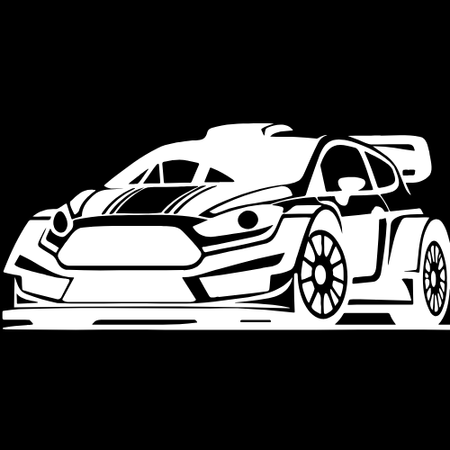
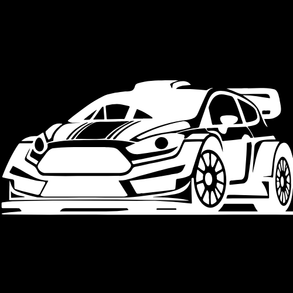
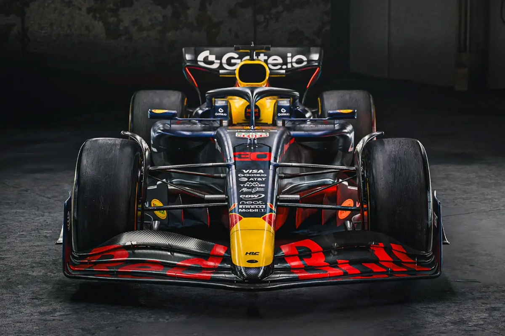
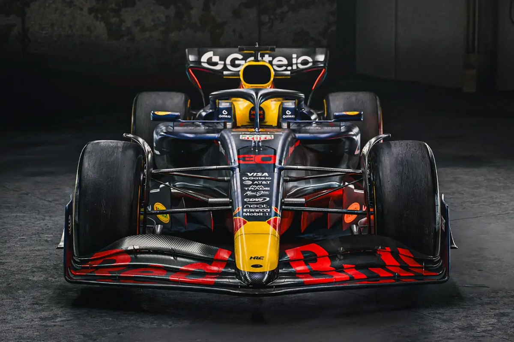

Les Sports Automobiles
Les sports automobiles englobent une variété de disciplines de course impliquant des véhicules motorisés, allant des voitures de tourisme aux monoplaces en passant par les motos.
Types de sports automobiles
Voici quelques types populaires de sports automobiles :
- Formule 1 : La catégorie reine des courses de voitures monoplaces.
- Rallye : Courses sur routes fermées avec des terrains variés.
- Tourisme : Courses avec des voitures de série modifiées.
- Endurance : Courses de longue durée, comme les 24 Heures du Mans.
Matériel
Pour participer aux sports automobiles, il est essentiel d'avoir le bon équipement :
- Véhicule adapté à la discipline choisie.
- Casque de sécurité homologué.
- Combinaison ignifugée.
- Gants et chaussures de course.
- Accessoires de sécurité (HANS, extincteur, etc.).
 
